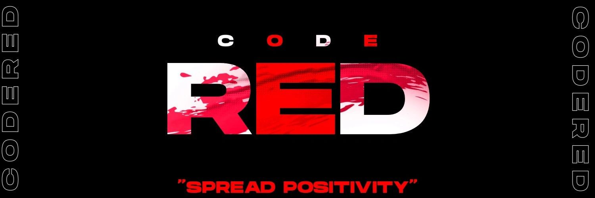

Become the go-to destination for gamers who want to create change.
Project Code Red's vision is to become the home for gamers worldwide who want to make a difference inside and outside the gaming community.
Project Code Red brings gaming, service, education, and leadership into one community-driven mission built around real-world impact.

Project Code Red's vision is to become the home for gamers worldwide who want to make a difference inside and outside the gaming community.
Project Code Red empowers gamers to use esports, community leadership, and collective action to make the world better.
Service, Humanitarianism, Inclusiveness, Encouragement, Leadership, and Devotion give the brand a strong, memorable framework.
Project Code Red was founded to prove the gaming community does not have to conform to toxic stereotypes. It can be a vehicle for positivity, support, service, and leadership.
The organization also aims to provide underserved communities access to the internet and technology so that more people can connect, learn, and thrive in a digital world.
"A large amount of dedicated people is powerful enough to have an impact and create change for the better."
That belief continues to shape how the organization grows.
The Platinum Seal is the highest level of recognition offered by GuideStar and signals that the organization shares clear, important information about its goals, strategies, capabilities, and achievements.
Project Code Red is recognized as a certifying organization for the President's Volunteer Service Award, enabling the team to honor outstanding volunteer impact.